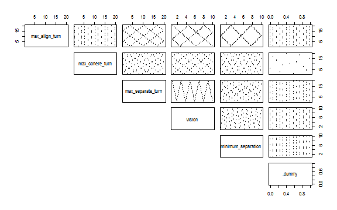
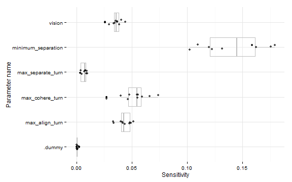

This example is using NetLogo Flocking model (Wilensky, 1998) to demonstrate sensitivity analysis with the Fourier amplitude sensitivity test.
To test sensitivity with FAST method experiment parameter value sets have to be defined with nl_param_fast and the results must be interpreted with nl_get_fast_sensitivity function.
Functions nl_param_fast and nl_get_fast_sensitivity use fast package (Reusser et al. 2011) to create parameter value sets and analyse results.
experiment <- nl_experiment(
model_file = "models/Sample Models/Biology/Flocking.nlogo",
setup_commands = c("setup", "repeat 100 [go]"),
iterations = 5,
param_values = nl_param_fast(
world_size = 50,
population = 80,
max_align_turn = c(1, 20),
max_cohere_turn = c(1, 20),
max_separate_turn = c(1, 20),
vision = c(1, 10),
minimum_separation = c(1, 10),
.dummy = c(0,1)
),
mapping = nl_default_mapping,
step_measures = measures(
converged = "1 -
(standard-deviation [dx] of turtles +
standard-deviation [dy] of turtles) / 2",
mean_crowding =
"mean [count flockmates + 1] of turtles"
),
eval_criteria = criteria(
c_converged = mean(step$converged),
c_mcrowding = mean(step$mean_crowding)
),
repetitions = 10, # repeat simulations 10 times
random_seed = 1:10
)To see the experiment design with scatter plots use nl_show_params function:
nl_show_params(experiment)
Run the experiment:
result <- nl_run(experiment, parallel = TRUE) sensitivity_converged <- nl_get_fast_sensitivity(result, "c_converged")
sensitivity_mcrowding <- nl_get_fast_sensitivity(result, "c_mcrowding")library(ggplot2)
ggplot(sensitivity_converged, aes(x = param, y = param_sensitivity)) +
geom_boxplot(alpha = 0.2, color = "gray") +
geom_jitter(alpha = 0.7, position = position_jitter(width = 0.1)) +
coord_flip() +
theme_minimal() +
labs(x = "Parameter name", y = "Sensitivity")